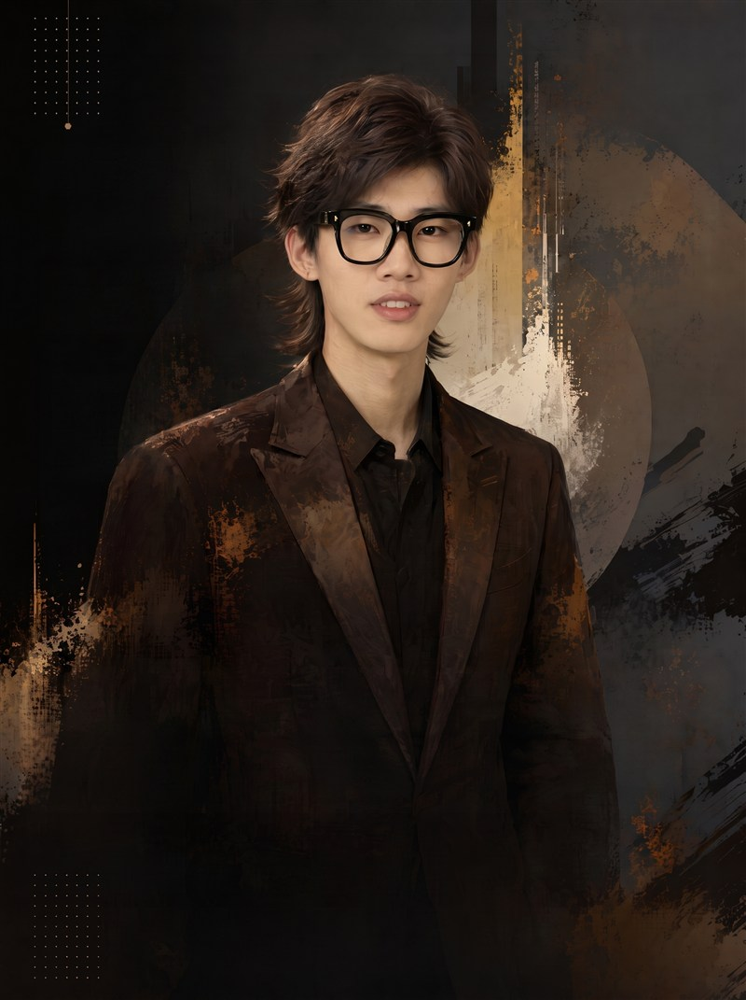

“技术为笔，创意为墨——用 AI 重塑想象，让故事被世界看见。”

陈琪昌，AIGC 视频训练师，AIGC 视频工作流前沿研究者。自毕业起便专注 AIGC 视频创作，深耕一线创作实战场域，累计完成 2000+ 分钟 AIGC 内容制作，在大量真实项目中反复打磨提示词、镜头语言与生成流程的每一个细节。
作品层面，多部内容在红果剧场、TikTok 等国内外平台上线并成为爆款，播放量达千万级——实现了从“能生成”到“能传播”的完整跨越。
技术层面，作为大模型工作流开发者，深度参与主流大模型 AIGC 工作流建设，是 Seedance 2.5、Happyhorse 内测工作流的开发先行者。持续探索 AI 与内容的边界，让技术服务于更有温度的表达。
自毕业起便开始专注 AIGC 视频创作，与行业共同成长的一线创作者。
累计完成的 AIGC 内容制作体量，横跨多类型项目的实战沉淀。
多部作品在红果剧场 / TikTok 等平台达成千万级播放。
Seedance 2.5 / Happyhorse 内测工作流开发先行者。
从创意策划到视频产出，掌握 AIGC 视频创作的每一个环节。在累计 2000+ 分钟的内容制作中，熔炼出一套可复制、可落地的高效创作流程——让每一步都有章法，每一帧都可交付。
深度参与 Seedance 2.5、Happyhorse 等主流大模型的内测工作流开发，始终站在工具演进的最前排。对 AI 工具的应用保持着前沿性的理解与第一手的实践经验。
将 AI 技术与内容营销深度结合，把“生成能力”转化为“传播结果”与“商业价值”，帮助企业与个人实现内容价值的最大化。
自主研发漫剧前置资产 Skills，将角色、场景等前置资产的生成流程标准化、工具化；深度参与配套网站开发，让创作能力触手可及，打破技术与创作之间的行业壁垒。
不做纯粹的理论填鸭，而是通过真实案例与现场演示，带领学员边学边做。每一次课程都紧密结合行业实际应用场景，确保学员学以致用——课堂结束之时，就是能力上手之日。
为温州广播电视台提供三期 AIGC 视频创作专项培训，累计覆盖百人团队，帮助广电团队掌握 AI 视频生成技术，提升内容生产效率与创意表达能力。培训期间，学员独立制作出圈作品《刘伯温今天退休了吗？》——以温州文成本土历史文化名人刘伯温为创作原点，用 AI 视频让历史人物走进当下语境，呼应温州"传统影视看横店，AI 影视看温州"的 AI 内容创作热潮，成为 AI 赋能地方媒体内容创新的代表性成果。
为武汉文理学院开展二期 AIGC 专项培训，以真实项目为载体、以落地交付为标准，带领学员在培训过程中完成实际作品创作，实现“学完即产出”。